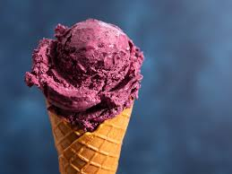
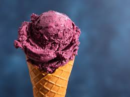
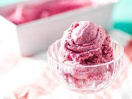
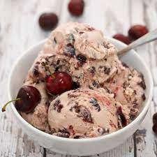
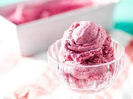
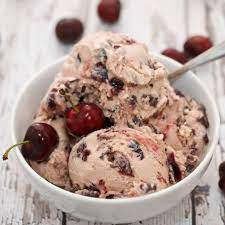

History of Ice cream
Early frozen desserts The origins of frozen desserts are obscure, although several accounts exist about their history. Some sources describe ice cream-like foods as originating in Persia as far back as 550 BC. A Roman cookbook dating back to the 1st-century includes recipes for sweet desserts that are sprinkled with snow. There are Persian records from the 2nd-century for sweetened drinks chilled with ice. There are Tang dynasty records of a chilled dessert made with flour, camphor and water buffalo milk. Kakigori was a Japanese dessert using ice and flavored syrup. The origins of kakigōri date back the Heian period in Japanese history, when blocks of ice saved during the colder months would be shaved and served with sweet syrup to Japanese aristocracy during the summer. Kakigōri's origin is referred to in The Pillow Book, a book of observations written by Sei Shōnagon, who served the Imperial Court during the Heian period. The earliest known written process to artificially make ice is known not from culinary texts, but the 13th-century writings of Arab historian Ibn Abu Usaybia in his book Kitab Uyun al-anba fi tabaqat-al-atibba (Book of Sources of Information on the Classes of Physicians) concerning medicine in which Ibn Abu Usaybi’a attributes the process to an even older author, Ibn Bakhtawayhi, of whom nothing is known. Ice cream production became easier with the discovery of the endothermic effect. Prior to this, cream could be chilled easily but not frozen. It was the addition of salt, that lowered the melting point of ice, which had the effect of drawing heat from the cream and allowing it to freeze.
 

 



How to make vanilla ice cream
Ingredients
- 500 ml (2 ⅛ cups) full-fat milk
- 5 oz (140 g) caster sugar
- a few drops of vanilla essence
- 150 ml (⅔ cup) double cream
- 6 egg yolks
- Combine all ingredients in an ice cream machine.
- Run the machine according to the manufacturer's directions.
- Transfer ice cream to a container, and freeze for a few hours until solid.
Steps
- Pour milk into a pot with vanilla and bring almost to a boil.
- Beat the egg yolks and sugar.
- Pour some of the milk into the egg mixture, whisking constantly.
- Pour egg and milk mix back into the pot, still whisking. Heat gently until thickened.
- Pour into a bowl and place in sink half-filled with cold water to cool.
- Stir occasionally, then chill in the fridge.
- Whip the cream and fold into the mix.
- Pour into an ice cream machine. Prepare as per your ice cream machine's instructions. Alternately, freeze intub for 3 hours. Every hour, whisk the ice cream to stop ice crystals from forming